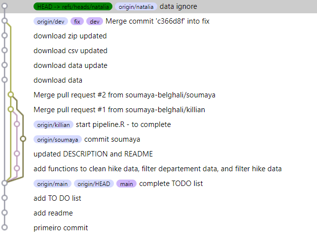

Warning message:
tar_source() only sources R scripts. Ignoring non-R files: R/README.md BusRando
November 24, 2023
BusRando
Our project aims to explore the accessibility of hiking tracks around Montpellier by bus.
You can acess our project in Github if you want https://github.com/soumaya-belghali/BusRando.

Working with Github
We developed our project collaborating with each other through Github: each of us used a different branch
